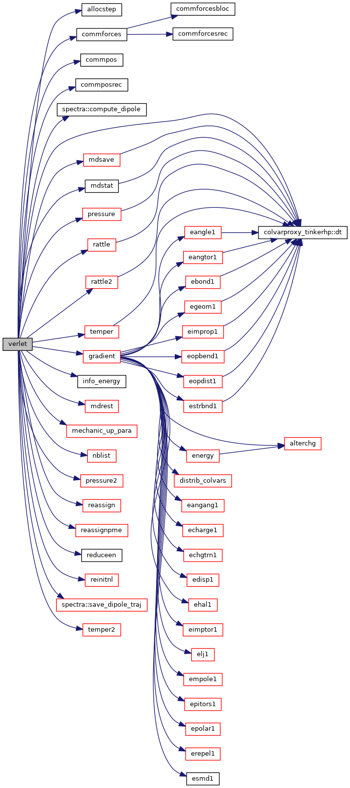

|
Tinker-HP v1.3
|
|
Tinker-HP v1.3
|
Go to the source code of this file.
Functions/Subroutines | |
| subroutine | verlet (istep, dt) |
| performs a single molecular dynamics time step via the velocity Verlet multistep recursion formula More... | |
| subroutine verlet | ( | integer | istep, |
| real*8 | dt | ||
| ) |
performs a single molecular dynamics time step via the velocity Verlet multistep recursion formula
| [in] | istep,: | index of timestep |
| [in] | dt,: | length of timestep |
Definition at line 22 of file verlet.f90.
References allocstep(), commforces(), commpos(), commposrec(), spectra::compute_dipole(), colvarproxy_tinkerhp::dt(), gradient(), info_energy(), mdrest(), mdsave(), mdstat(), mechanic_up_para(), nblist(), pressure(), pressure2(), rattle(), rattle2(), reassign(), reassignpme(), reduceen(), reinitnl(), spectra::save_dipole_traj(), temper(), and temper2().
Referenced by dynamic_bis().

 1.8.5
1.8.5